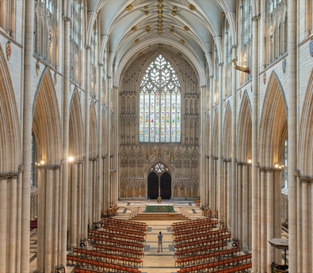

Find out more about York's history and key sights!
York's Medieval City Walls (or "Bar Walls"), a scheduled ancient monument encircling the historic City
of York, comprise 3.4km (2 miles) of surviving masonry. They are the longest town walls in England. They were
built mainly in the 13th century of magnesian limestone and, uniquely in England, were set on earthen ramparts.
Source: York Walls website
The city was founded by the Romans as Eboracum in 71 AD. It became the capital of the Roman province of Britannia Inferior, and later of the kingdoms of Deira, Northumbria and Jórvík. In the Middle Ages, York grew as a major wool trading centre and became the capital of the northern ecclesiastical province of the Church of England, a role it has retained. In the 19th century, York became a major hub of the railway network and a confectionery manufacturing centre, a status it maintained well into the 20th century. During the Second World War, York was bombed as part of the Baedeker Blitz. Although less affected by bombing than other northern cities, several historic buildings were gutted and restoration efforts continued into the 1960s.
King George VI once remarked:
"The history of York is the history of England"
| Date | Event |  |
|---|---|---|
| 71 | York is founded by Roman Ninth Legion | |
| 735 | York has its first Archbishop | |
| 866 | Vikings capture the city | |
| 1068 | York Castle is founded | |
| 1349 | Black Death - plague hits York | |
| 1644 | Civil War Siege of York | |
| Information from History of York | ||
Ready to test your knowledge of York? Click on the link below!